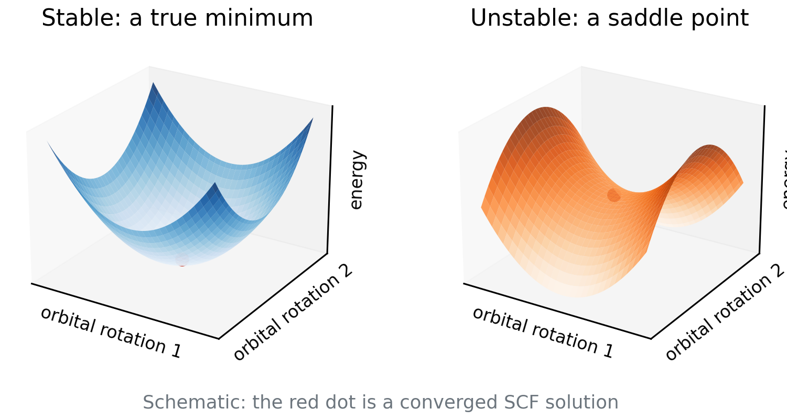

Lecture 12 · Debrief Exp. 7 · SCF stability, open shells and transition metals
Saddle points in orbital space, stability analysis, and Experiment 8
Advanced Physical Chemistry · Florida Institute of Technology
Debrief: Experiment 7
Your results
[Live: open Class results → Experiment 7 heatmap]
- Ar₂ curves for five functionals on SG-1, SG-2 and SG-3
- Which curves wiggle? On which grids?
[Insert class plot: Ar₂ curves by grid]
[Insert class plot: Experiment 7 dissociation curves for each functional on SG-1, SG-2 and SG-3 with the reference curve]
[Insert class plot: wiggle report and timing]
[Insert class plot: Experiment 7 wiggle report (number of extrema per curve) and time per job vs. grid]
What you probably saw: wiggles are numerical
- Extra minima and maxima that change with the grid are grid noise, not physics
- They are worst for the smallest grid and flexible meta-GGAs
- Functionals such as M06-L, M11-L and M11 typically needed SG-3
- B3LYP typically converged already on SG-1 or SG-2
ωB97M-V and timing
- ωB97M-V is a modern, carefully constrained functional: typically better behaved
- Bigger grids cost more time, but the penalty is modest for small systems
- HF exchange needs no grid: the grid only affects the DFT part
Recommendations
- Use at least SG-2 or SG-3 for meta-GGAs and Minnesota functionals
- Test convergence: repeat with the next larger grid
- Report your grid in every calculation
Wiggles that move with the grid are numerical noise. Choose the grid for the functional, and report it.
SCF solutions and stability
An SCF solution is a stationary point
- The SCF finds orbitals where the energy is stationary with respect to orbital rotations
- Stationary can mean minimum or saddle point
- A saddle point has a lower-energy direction hidden in orbital space
- “Convergence criterion met” does not tell you which one you reached
Minimum versus saddle point

- Left: every direction goes up
- Right: some directions go down
- The energy can still be lowered
Stability analysis
- Compute the electronic Hessian: second derivatives of E with respect to orbital rotations
- All eigenvalues positive: a true minimum, a stable solution
- A negative eigenvalue: an instability; follow that direction and re-converge to lower energy
- Cost: a diagonalization-like step at the end of the SCF
Internal and external instabilities
- Internal: the lower solution has the same form, e.g. restricted → another restricted solution, or unrestricted → another unrestricted
- External: the lower solution needs a different form, e.g. RHF → UHF (symmetry breaking)
- Q-Chem keyword for internal:
INTERNAL_STABILITY TRUE[Seeger and Pople 1977; Bauernschmitt and Ahlrichs 1996]
Spin contamination
- Unrestricted wave functions are not eigenfunctions of Ŝ²
- Exact: ⟨S²⟩ = S(S+1). Quintet 6, quartet 3.75, triplet 2, sextet 8.75
- Output ⟨S²⟩ larger than this signals contamination from higher spin states
- Always compare with the exact value for your multiplicity
Quick question
An SCF converged in 12 cycles with a nice small gradient.
Is the energy the ground-state energy for that functional?
Not necessarily. It may be a saddle point or a higher-lying solution. Only stability analysis (or trying other initial guesses) can tell.
Open shells recap
- Open shells need an unrestricted treatment (UKS/UHF): different orbitals for α and β
- The guess matters: convergence may land on different solutions
- Multiplicity 2S + 1 is an input you must get right
- Stability analysis is especially useful for open-shell systems
A converged SCF is a stationary point, not necessarily a minimum. Check stability when it matters.
— Natural break: end of lecture A —
If you split the material over two meetings, stop here. Lecture B begins with a one-slide recap of stability analysis, then transition metals and the Experiment 8 briefing.
Transition metals
Why transition metals are hard
- 3d and 4s (4d and 5s) orbitals lie close in energy
- Many electron configurations are nearby
- Many low-lying states of different spin
- The ground state can depend on the functional
Spin-state energetics
- A spin-state gap is a small difference between large energies
- The fraction of HF exchange tends to shift the balance toward high spin
- A benchmark: it tests how well a functional balances these effects
- SCF can converge to the wrong state even for single atoms
Effective core potentials
- Heavy atoms: core electrons are many and move fast
- An ECP replaces the core by an effective potential, including scalar relativistic effects
- In the def2 family, ECPs (
ECP def2-ECP) start at Rb, so Ru needs one - Fe needs no ECP, so keep the keyword for Ru⁺
Why several functionals were removed
- Some functionals’ SCF often fail to converge on these atoms
- Examples excluded from the experiment: SPW92, B3LYP, SCAN, ωB97M-V, and HF
- Message: methods that work well on organic molecules may not be usable for metals
- This is a general warning, not a ranking
Metals: near-degenerate configurations, many spin states, ECPs for heavier elements, and SCF problems.
Experiment 8 briefing
Goal
Experiment 8: Stability Analysis and Transition Metals
- Run each calculation with and without stability analysis
- See what stability analysis changes
- Test whether a stable solution is automatically an accurate one
Reactions and reference values
| Reaction | Ref. (kcal/mol) |
|---|---|
| Fe: quintet → triplet | 34.32 |
| Ru⁺: quartet → sextet | 21.96 |
| Species | Charge | Multiplicity |
|---|---|---|
| Fe (ground) | 0 | 5 |
| Fe (excited) | 0 | 3 |
| Ru⁺ (ground) | +1 | 4 |
| Ru⁺ (excited) | +1 | 6 |
Methods and jobs
| Functional | Species run |
|---|---|
| BP86 | Ru⁺ |
| PBE | Fe and Ru⁺ |
| PBE0 | Ru⁺ |
| M06-2X | Fe |
| B97M-V | Fe |
- def2-TZVP for all, with
ECP def2-ECPfor Ru⁺ - Each job twice: plain and with
INTERNAL_STABILITY TRUE - 24 jobs in total
Pitfalls
- Use the multiplicities from the table, not the default singlet
- Ru⁺ has charge +1: line 2 of the .xyz is “1 4” or “1 6”
- Compare the SCF energies: the stability run can be lower or equal
- Record whether the stability job reported an instability
Predictions to lock
- Will stability analysis lower any energies? Which functionals?
- Will a stable solution be accurate to a few kcal/mol?
- Which functional would you trust for these atoms?
References
- Seeger, R.; Pople, J. A. J. Chem. Phys. 66 (1977): stability of Hartree–Fock wave functions.
- Bauernschmitt, R.; Ahlrichs, R. J. Chem. Phys. 104 (1996): stability of Kohn–Sham solutions.
- Weigend, F.; Ahlrichs, R. Phys. Chem. Chem. Phys. 7 (2005): def2 basis sets and ECPs.
- Wheeler, S. E.; Houk, K. N. J. Chem. Theory Comput. 6 (2010): grid errors.

CHM 5111 · Advanced Physical Chemistry · Florida Institute of Technology